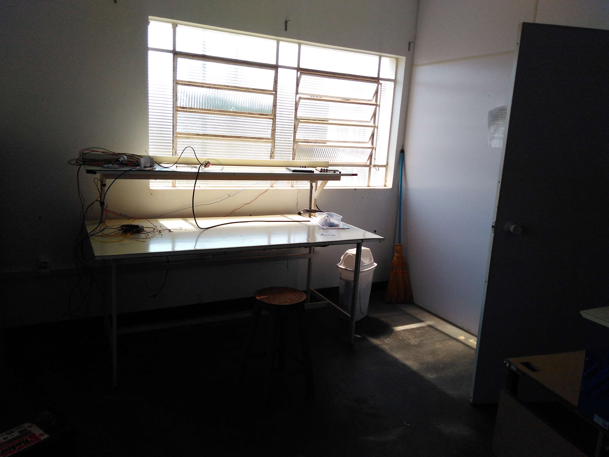
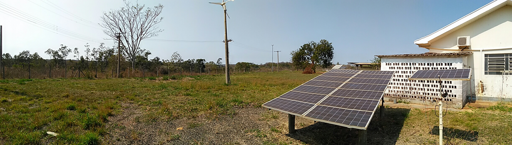

Undergraduate Electrical and Electronic Engineering
Solar Panels in Brazil in General
I arrived at Ilha Solteira and was introduced to the renewable energy laboratory. I was able to use a workshop at the back of the building, which doubled as model off grid house. The house included two large solar panels, and a large power bank from car batteries which stored the energy.
I learned that in most Brazilian states, due to the current rules for distributed generation, there are very profitable incentives for energy fed into the grid. As such, hybrid solar systems (where households use their own energy, and feed the surplus into mains) are non-existent. However, this could change quickly, as it is currently uncertain whether Bolsonaro will maintain the same rates.
However, photovoltaics are also seen as a solution to providing energy in remote areas that lack grid access. Here, systems are more expensive, as they require a full power banks to store energy for periods without sunlight. These systems could both be applied to communities, or as solutions to industries such as mining.
It was very interesting to witness the real world challenges of using this technology, especially in the tropical climate. During this period, for instance, there was an explosion of one of the car batteries in the back of the model house. I am not sure what exactly caused the explosion; however, the town experience rapid temperature shifts from 14 degrees to 39 degrees, and periods of incredibly high humidity, which played a large contribution. Moreover, in the last week there was a storm with ferocious wind surges, which knocked down several of the solar panels (including my project) around the university. These large solar panels, when positioned against the wind, act like a giant kites and can create massive forces.
My Project

I was given access to a small scale, dual-axis solar panel. This panel had a stand and was actuated by two motors: one motor rotated the pitch of the panel with two chained gears, and another motor rotated the yaw of the panel through a rotating rod. The university had a power supply, H-bridge, Arduino, and a set of light dependent resistors. I was encouraged to develop this system, and I was curious about fuzzy logic, even though I didn’t know what it was. I found several research paper which had combined fuzzy logic with solar panel tracking, and started recreating them.
I decided I would start by setting up the components to create the most straightforward system and develop it from there. I was able control the motors correctly, and I was able to create a theoretically functional light tracker (just find the error between respective LDR sensors). However, I quickly realized a problem. Each LDR, based on the way they were setup (quite crudely), had completely different light responses. They had completely different response curves to varying light conditions. Thus, even if I carefully compensated each LDR to have the same value with the same light, as soon as the average light intensity increased, their values would diverge. This led to a problematic behavior: if I applied a simple PID controller to the solar panel on an overcast day, then the panel would continue to rotate without finding the sun. This solution presented a great opportunity to implement fuzzy logic, which I believe solves the problems well.
I calibrated each LDR to have its own membership function for “bright” and “dark”, with the two being vertical reflections of each other. This meant that each of the sensors could have a completely different response, and the values could still be compared! I then used four simple rules to control the panel:

I then created my own classes to perform fuzzy logic in Python. I know that there are a lot of libraries with the same functionality, however, I created my own library to make sure I understood fuzzy logic correctly. I used lists variables with a pre-defined domain as the basis for the fuzzy sets, and I only implemented the most basic methods for the operators: “and” as minimum, “or” as maximum, and defuzzification using the center of gravity method. I created a rule class, and some simple functions for generating different membership functions.
I established communication between the Arduino and my computer using the “Pyserial” library. The Arduino ran as a slave, rotating in different directions based on different input chars, and outputting sensor data when requested. I then combined everything in a simple test projects. Unfortunately, I did not have a precise way of generating the membership functions for each sensor. Thus, my solution was to take samples for several seconds, moving the sensor into light and dark spots, and record the maximum and minimum values. The program then used these values to generate a ramp up “bright” function.
Success… somewhat. The solar panel tracked the sun, but only when the light conditions were constant. For this to work as I predicted, I would need an exact way of calibrating the functions: I imagine a test bench with a very powerful, variable brightness lamp. I would use this to make and record analogue measurement for incremental brightness changes.